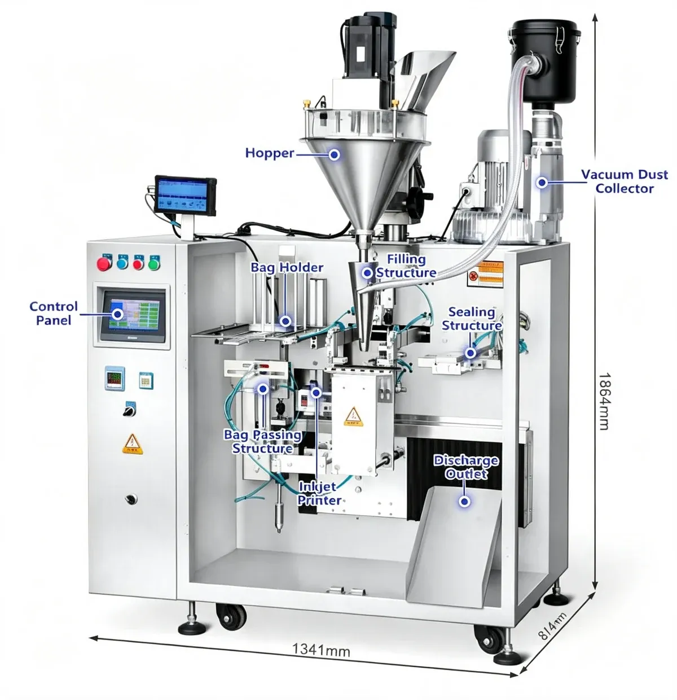
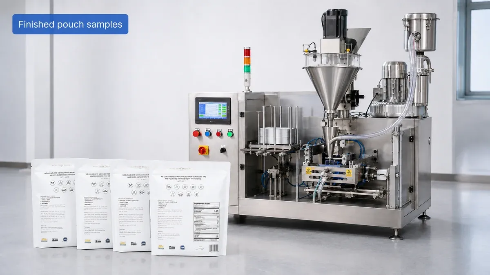
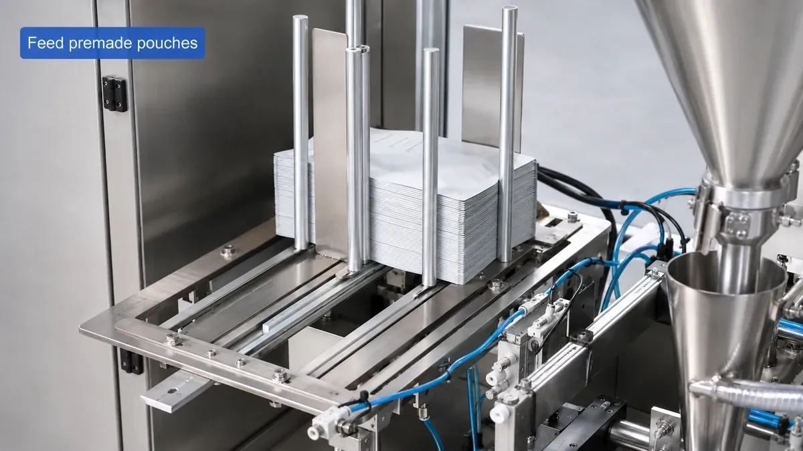
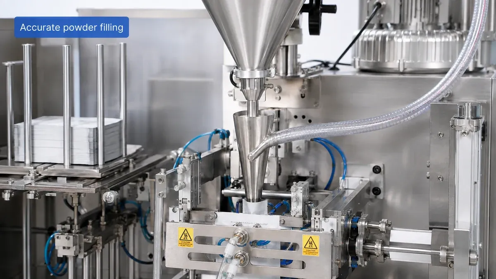
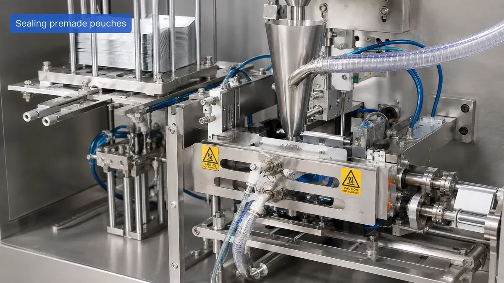

01
Controlled filling
Premade Pouch Packaging Machines
Compact Powder Packaging Solution for Premade Bags
Note: Technical specifications are for reference. Final performance depends on powder characteristics, filling weight, pouch size and selected configuration.
PBF-09
The PBF-09 Automatic Premade Pouch Powder Filling and Sealing Machine is designed for automatic dosing and sealing of dry powder products packed in ready-made pouches. It combines pouch feeding, auger dosing, powder filling, heat sealing and dust extraction in one compact system.
It is particularly suitable for meal replacement powder, protein powder, cocoa powder, garlic powder, chili powder and other fine powders. Unlike VFFS machines, the PBF-09 works with premade pouches, giving a premium finished package appearance for customers who already use preformed bags.

PBF-09
Premade pouch systems are suitable when package appearance and branding flexibility are important. Customers can purchase fully printed pouches in advance and use them directly on the packaging line.
Controlled filling
Cleaner packaging conditions
Flexible pouch sizes
Reliable heat sealing
Premium retail packaging
PBF-09
The machine is mainly designed for premade pouches without zippers: flat premade pouches, heat-sealable premade bags, stand-up pouches without zipper and laminated powder pouches. Standard pouch size: 60–220 mm wide × 80–310 mm long.
The final machine configuration should be selected according to powder density, flowability, particle size and required filling weight. Custom pouch sizes can be evaluated according to the application.

PBF-09
Meal replacement powder
Protein powder
Collagen powder
Cocoa powder
Coffee powder
Garlic powder
Chili powder
Seasoning powder
Nutritional powder
Cosmetic powder
Other compatible dry powders
PBF-09
Meal replacement powder, protein powder, cocoa powder, coffee powder and seasoning powder.
Collagen powder, nutritional powder and supplement powder.
Suitable for compatible powdered cosmetic products.
The machine may also be used for suitable dry chemical powders depending on product characteristics and material requirements.
PBF-09
The PBF-09 uses an auger screw to control powder dosing. This method is well suited for fine powders and helps maintain repeatable filling performance, with the setup selected according to powder bulk density, target weight, flowability and auger specification.
The PBF-09 works directly with ready-made bags, allowing customers to use premium printed pouches without forming bags from roll film.
The pouch rack can be adjusted for different bag sizes within the specified range, helping simplify product changeover.
The integrated vacuum dust collector helps reduce powder dispersion around the filling nozzle and keeps the filling area cleaner.
A touchscreen interface provides convenient machine operation, parameter adjustment and status monitoring.
The powder hopper can be customized according to production requirements. A photoelectric level sensor can also be integrated to work with an existing feeding system.
The sealing temperature can be adjusted up to approximately 200°C to suit compatible heat-sealable pouch materials.
For larger bags, the machine can shake the pouch during powder filling to help distribute powder more evenly inside the package.
PBF-09
Premade pouches are loaded into the adjustable bag holder and automatically supplied to the packaging station. The pouch is positioned and prepared for filling. The auger filling system measures and dispenses the preset quantity of powder into the bag.
For larger pouches, the machine can shake the pouch during filling to help distribute powder more evenly. After filling, the pouch passes through the heat-sealing section. A vacuum dust collection system captures airborne powder around the filling nozzle to help keep the packaging area cleaner.

PBF-09
Pouch Feeding
Pouch Positioning
Auger Dosing
Powder Filling
Dust Extraction
Heat Sealing
Finished Pouch Output
PBF-09
The auger screw measures and dispenses the preset quantity of powder into the pouch. Standard filling accuracy is approximately ±0.3–1.5%, and the filling setup is selected according to powder bulk density, target weight, flowability and auger specification.
The standard powder hopper capacity is approximately 10 L and can be customized according to production capacity and feeding method. A photoelectric level sensor can be integrated to work with an existing feeding system.

PBF-09
Standard filling accuracy is approximately ±0.3–1.5%. Actual accuracy depends on:
Powder density
Particle size
Flowability
Target filling weight
Auger size
Filling speed
PBF-09
After filling, the pouch passes through the heat-sealing section. The sealing temperature can be adjusted up to approximately 200°C to suit compatible heat-sealable pouch materials, helping maintain consistent pouch closure and finished-package appearance.
A vacuum dust collection system captures airborne powder around the filling nozzle to help keep the packaging area cleaner. The dust collector is a vacuum type, integrated with the filling section.

PBF-09
Standard working speed is approximately 20–30 pouches/min. Actual output depends on:
Filling weight
Powder characteristics
Pouch size
Sealing time
Printing requirements
Dust extraction configuration
PBF-09
What's included: main premade pouch packaging machine, auger powder filling system, 10 L powder hopper, adjustable pouch holder, heat sealing system, touchscreen control panel, vacuum dust collector.
An inkjet printer can be integrated for printing production information directly onto the pouch. Printing content and ink color can be customized.
A larger powder hopper can be supplied according to production requirements.
A photoelectric level sensor can be integrated to work with an existing feeding system.
An automatic powder feeder can be added according to the feeding method.
Different auger screws can be supplied according to the powder and required filling range.
The filling range can be customized according to the product and required package weight.
The pouch size range can be customized according to the application.
Printing content and ink color can be customized according to customer requirements.
Watch the PBF-09 automatic premade pouch powder filling and sealing machine in operation.
PBF-09
PBF-09
Share your powder type, target filling weight, pouch size and required production speed. PACKGENIX can review the product and packaging requirements and recommend the appropriate filling setup and optional configuration.